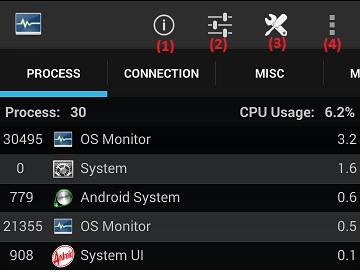
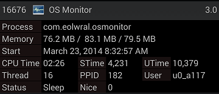
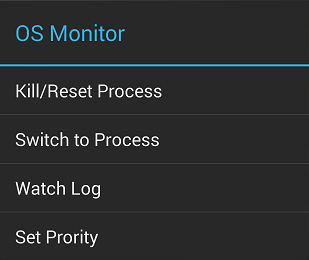
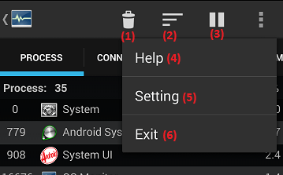
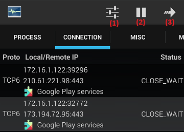
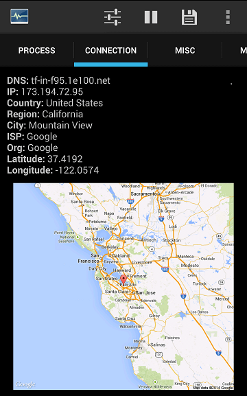
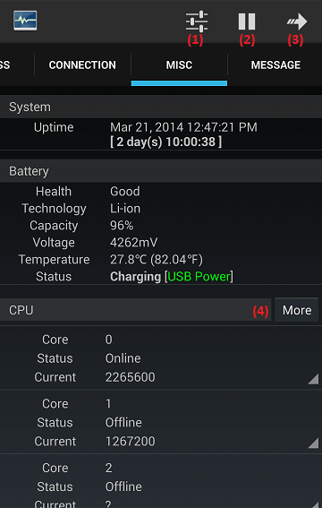
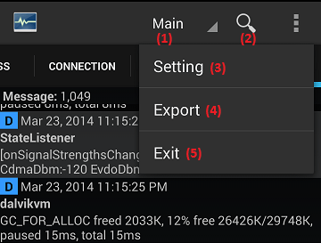
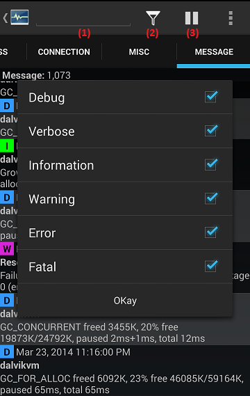
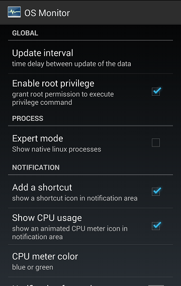

Overview
OSMonitor is a small tool to monitor your Android, please check following sections, it could help to understand this tool.
Process
This tab provides a dynamic real-time view of processes. It can display summary information for each process, or sort all processes bases on usage, memory, PID, Name or CPUTime.
It also has 2 different modes include Baisc mode and Advanced mode, those modes have different buttons to adjust the view.
Basic Mode
There are 4 buttons on action bar, each button has own function.
(1) Go to online maunal.
(2) Enter settings. (check settings)
(3) Enter Advanced mode.
(4) Exit itself.

The view of process isn't only giving a simple list, it can do more, if you want to show detail information for process, you just need to click on a single process.

If you long click on a single process, popup menu will show up, there are some extra options.

Advanced Mode
(1) Terminate processes.
(2) Sort processes.
(3) Stop refreshing.
(4) Go to online maunal.
(5) Enter settings. (check settings)
(6) Exit itself.

Tips (Thanks to Sergei Shir)
(1) To switch from Advanced mode to Basic mode, you can go to any other tab and back, or press Back
(2) To kill a process in Advanced mode, you need to press on the garbage can icon - it will turn into X icon, then select the processes by clicking on them, then press on the X icon
(3) To sort the processes - switch to Advanced mode - press on the histogram icon - select the desired criterion
Connection
This tab displays all network connections include protocol, internet address, status and own process.
(1) Enter settings. (check settings)
(2) Suspend refreshing.
(3) Export connections information to a csv file.
(4) Exit OS Monitor.

If you click on a single process, the location informaiotn for IP will show up, it cloud take a few seconds, the time depends on your network, because it will send a query to WHOIS server and wait for result. (press back to return list)

Misc
This tab displays uptime, battery, CPU, memory and network interface information, if you are using a rooted phone, setCPU function is available.
(1) Enter settings. (check settings)
(2) Suspend refreshing.
(3) Exit OS Monitor.
(4) SetCPU function.

Message
This tab displays logcat and dmesg, it provides adavance search and filter to help you find specific entries. (Notice: you must use a rooted phone in order to get all logcat and dmesg after Android 4.2.1 [Jelly Bean], otherwise, the dmesg will be blank.)
(1) Choose logcat type or dmesg
(2) Switch to advance search mode.
(3) Enter settings. (check settings)
(4) Export logcat or dmesg to a csv file.
(5) Exit OS Monitor.

Search Mode
(1) Instanly keyword search.
(2) Filter type.
(3) Suspend refreshing.

All filters or search strings will affect the result, even you leave advance search mode.
Settings
The settings provide a lot of options, please check it directly.
